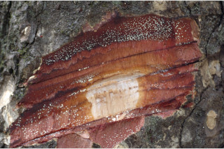
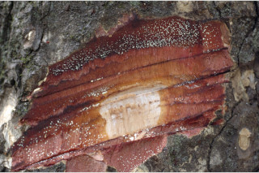

Trees up to 15 m tall.
15 ಮೀ ಎತ್ತರದವರೆಗೆ ಬೆಳೆಯುವ ಮರಗಳು.
15 മീറ്റര് വരെ ഉയരമുള്ള മരങ്ങള്.
மரங்கள் 15 மீ. உயரம் வரை வளரக்கூடியது.
Bark brown, regularly scaly; blaze red.
ತೊಗಟೆ ಕಂದು ಬಣ್ಣ ಹೊಂದಿದ್ದು ನಿಯತವಾಗಿ ಪೊರೆಗಳನ್ನು ಹೊಂದಿರುತ್ತದೆ; ಕಚ್ಚು ಮಾಡಿದ ಜಾಗ ಕೆಂಪು ಬಣ್ಣದಲ್ಲಿರುತ್ತದೆ.
ക്രമമായ ശല്ക്കങ്ങളോടുകൂടിയ, തവിട്ടുനിറത്തിലുള്ള പുറതൊലി; വെട്ടുപാടിന് ചുവപ്പ് നിറം.
மரத்தின் பட்டை ப்ரவுன் நிறமானது, ஒழுங்கான செதில்களாக பெயரும் தன்மையுடையது; மரத்தின் உள்பட்டை சிவப்பு நிறமானது.
Branchlets terete, glabrous; apical bud usually covered by 4-6 imbricate ovate scales.
ಕಿರುಕೊಂಬೆಗಳು ದುಂಡಾಕೃತಿಯಲ್ಲಿದ್ದು ರೋಮರಹಿತ -ವಾಗಿರುತ್ತವೆ; ಕಾಂಡದ ಅಂಕುರ (ತುದಿಮೊಗ್ಗು) ಸಾಮಾನ್ಯವಾಗಿ ನಾಲ್ಕರಿಂದ ಆರು ದುಂಡಾಕಾರದ ಇಂಬ್ರಿಕೇಟ್ ಮಾದರಿ -ಯಲ್ಲಿರುವ ಶಲ್ಕೆಗಳಿಂದ ಆವೃತವಾಗಿರುತ್ತವೆ.
അരോമിലവും ഉരുതുമായ ഉപശാഖകള്; കക്ഷ്യമുകുളം സാധാരണയായി, 4 മുതല് 6 വരെ ഇബ്രിക്കേറ്റ് ക്രമത്തിലുള്ള അണ്ഡാകാര ശല്ക്കങ്ങളാല് ആവരണം ചെയ്യപ്പെട്ടിരുക്കുന്നു
சிறிய நுனிக்கிளைகள் குறுக்குவெட்டுத் தோற்றத்தில் வளையமானது, உரோமங்களற்றது; தண்டின் நுனியில் தோன்றும் மொட்டு பொதுவாக 4-6 நெருக்கமான செதில்களால் மூடப்பட்டிருக்கும்.
Latex yellowish cream.
ಸಸ್ಯಕ್ಷೀರ ಹಳದಿ ಮಿಶ್ರಿತ ಕೆನೆ ಬಣ್ಣ ಹೊಂದಿರುತ್ತದೆ .
മഞ്ഞ കലര്ന്ന ക്രീം നിറത്തിലുള്ള സ്രവം.
சாறு மஞ்சள் கலந்த கிரீம் நிறமானது.
Leaves simple, opposite, decussate; petiole 0.5-1.0 cm long, canaliculate, glabrous; lamina 10-23 x 4-7.5 cm, oblong, narrow-oblong to narrow obovate, apex obtuse or bluntly short acuminate, base obtuse, thickly coriaceous; midrib indistinct at apex; secondary_nerves many, parallel, perpendicular to midrib; tertiary_nerves finely reticulate with tiny transparent glands at the centre of areoles, sometimes invisible due to thick cuticle.
ಎಲೆಗಳು ಸರಳವಾಗಿದ್ದು,ಕತ್ತರಿಯಾಕಾರದ ಅಭಿಮುಖ ಜೋಡನಾ ವ್ಯವಸ್ಥೆಯಲ್ಲಿ-ರುತ್ತವೆ; ಎಲೆತೊಟ್ಟುಗಳು 05 – 1.0 ಸೆಂ.ಮೀ, ಉದ್ದಹೊಂದಿದ್ದು, ಕಾಲುವೆಗೆರೆ ಸಮೇತವಾಗಿದ್ದು ರೋಮರಹಿತವಾಗಿರುತ್ತವೆ ; ಎಲೆಪತ್ರಗಳು 10 -23 X 4 – 7.5, ಚತುರಸ್ರಾಕಾರ,ಸಂಕುಚಿತ ಚತುರಸ್ರಾಕಾರದಿಂದ, ಸಂಕುಚಿತ ಬುಗುರಿಯಾಕಾರ-ದವರೆಗಿನ ಆಕಾರಹೊಂದಿದ್ದು,, ಚೂಪಲ್ಲದ ಮಾದರಿಯ ಅಥವಾ ಮೊಂಡಾಗಿ ಹಾಗೂ ಸಣ್ಣ ಪ್ರಮಾಣದಲ್ಲಿ ಕ್ರಮೇಣ ಚೂಪಾಗುವ ಮಾದರಿಯಲ್ಲಿದ್ದು,ಚೂಪಲ್ಲದ ಬುಡ ವನ್ನು ಹೊಂದಿರುತ್ತವೆ,ಎಲೆಗಳು ದಪ್ಪನೆಯ ತೊಗಲ್ಲನ್ನೋಲುವ ಮಾದರಿ-ಯಲ್ಲಿರುತ್ತವೆ; ಎರಡನೇ ದರ್ಜೆಯ ನಾಳಗಳು ಹೆಚ್ಚಿನ ಸಂಖ್ಯೆಯಲ್ಲಿದ್ದು ಸಮಾಂತರವಾಗಿದ್ದು, ಮಧ್ಯನಾಳಕ್ಕೆ ಲಂಬವಾಗಿರುತ್ತವೆ; ಮೂರನೇ ದರ್ಜೆಯ ನಾಳಗಳು ಸೂಕ್ಷ್ಮವಾಗಿದ್ದು, ಜಾಲಬಂಧ ನಾಳ ವಿನ್ಯಾಸದಲ್ಲಿದ್ದು, ನಾಳಗಳ ನಡುವಣ ಜಾಗದ ಮಧ್ಯ ಭಾಗದಲ್ಲಿ ಪಾರದರ್ಶಕವಾದ ರಸಗ್ರಂಥಿಗಳನ್ನು ಹೊಂದಿರುತ್ತವೆ ಹಾಗೂ ಕೆಲವು ಸಂಧರ್ಭಗಳಲ್ಲಿ ಎಲೆಗಳ ಮೇಲಿನ ದಪ್ಪವಾದ ಹೊರಹೊದಿಕೆಯ ಕಾರಣದಿಂದ ಗೋಚರವಾಗುವುದಿಲ್ಲ.
സമ്മുഖ, ഡെക്കുസേറ്റ് ക്രമത്തിലുള്ള ലഘുപത്രങ്ങള്; ഇലഞെട്ടിന് 0.5 സെ.മി മുതല് 1 സെ.മി വരെ നീളം, ചാലോടുകൂടിയതും, അരോമിലവുമാണ്; പത്രഫലകത്തിന് 10 സെ.മി മുതല് 23 സെ.മി വരെ നീളവും 4 സെ.മി മുതല് 7.5 സെ.മി വരെ വീതിയും, ആയതാകാരമോ, വീതികുറഞ്ഞ-ആയതാകാരം തൊട്ട് വീതി കുറഞ്ഞ അപഅണ്ഡാകാരമോ ആകാം, പത്രാഗ്രം ഉപകോണാകാരമോ മുനപ്പില്ലാത്ത ചെറുവാലോടുകൂടിയതോ ആകാം, പത്രാധാരം ഉപകോണാകാരമണ്, കട്ടിയേറിയ ചര്മ്മിലപ്രകൃതം; മുഖസിര അഗ്രത്തില് അവ്യക്തമാണ്; മുഖ്യസിരക്ക് ലംബമായി നില്ക്കുന്ന, സമാന്തരമായ ധാരാളം ദ്വിതീയ ഞരമ്പുകള് സൂക്ഷ്മമായ ജാലികതിര്ക്കുന്ന ത്രിതീയ ഞരമ്പുകള്, ജാലികകളുടെ മദ്ധ്യത്തിലായി നന്നേ ചെറിയ, സുതാര്യമായ ഗ്രന്ഥികളു്, കട്ടിയേറിയ ക്യൂട്ടിക്കിള് ഉള്ളതുകൊ് ഇവ ചിലപ്പോള് അവ്യക്തമായിരിക്കും.
இலைகள் தனித்தவை, எதிரடுக்கமானவை, குறுக்குமறுக்கமானவை; இலைக்காம்பு 0.5-1.0 செ.மீ. நீளமானது, குறுக்குவெட்டுத் தோற்றத்தில் கேனாலிகுலேட், உரோமங்களற்றது; இலை அலகு 10-23 X 4-7.5 செ.மீ., நீள்சதுர வடிவமானது, குறுகிய நீள்சதுரம் முதல் குறுகிய தலைகீழ் முட்டை வடிவானது, அலகின் நுனி மழுங்கியது அல்லது சிறிய மொட்டையான அதிக்கூரியது, அலகின் தளம் மழுங்கியது, தடித்த கோரியேசியஸ்; மையநரம்பு அலகின் நுனியில் தெளிவற்றது; இரண்டாம் நிலை நரம்புகள் அதிகமானது, ஒன்றுக்கொன்று இணையானவை, மையநரம்பிற்கு கிடைமட்டமானவை; மூன்றாம் நிலை நரம்புகள் நெருக்கமான வலைப்பின்னலுடையது அதன் நடுவில் ஒளிபுகும் சுரப்பியுடையது, சிலசமயங்களில் இச்சுரப்பிகள் கண்களுக்கு புலப்படுவதில்லை.
Flowers polygamous, white, clustered on old branches with elongated pedicels.
ಹೂಗಳು ಸಂಕೀರ್ಣಲಿಂಗಿಗಳಾಗಿದ್ದು,ಶ್ವೇತ ಬಣ್ಣದಲ್ಲಿದ್ದು, ಉದ್ದವಾದ ತೊಟ್ಟುಗಳ ಸಮೇತವಿದ್ದು ಅತಿ ವಯಸ್ಸಾದ ಕವಲುಗಳ ಮೇಲಿನ ಗುಚ್ಛಗಳಲ್ಲಿರುತ್ತವೆ.
നീളമേറിയ പൂന്തുകളോടുകൂടിയ ബഹുലിംഗികളായ വെളുത്ത പൂക്കള്, മൂത്ത തടികളില് കൂട്ടമായുാകുന്നു.
மலர்கள் ஒர்பாலானவை மற்றும் இருபாலானவை கலந்தவை (பாலிகேமஸ்), வெள்ளை நிறமானவை, தொகுப்பாக முதிர்ந்த இலைகளற்ற கிளைகளில் காணப்படுகின்றன, நீண்ட காம்புடையது.
Berry, elliptic, beaked; 1-seeded.
ಬೆರ್ರಿ ಗಳು ಅಂಡಾಕಾರದಲ್ಲಿದ್ದು, ಅಗ್ರದಲ್ಲಿ ಕೊಕ್ಕು ಹೊಂದಿದ್ದು ಒಂದು ಬೀಜವನ್ನೊಳಗೊಂಡಿರುತ್ತವೆ.
കായ അറ്റത്തൊരു കൊക്കോടുകൂടിയ, ദീര്ഘഗോളാകാര ബെറിയാണ്; ഒറ്റ വിത്തുമാത്രം.
முழுச்சதைகனி (பெர்ரி), நீள்வட்ட வடிவானது, நுனியில் அலகு போன்ற நீட்சியுடையது; 1-விதையுடையது.
 
